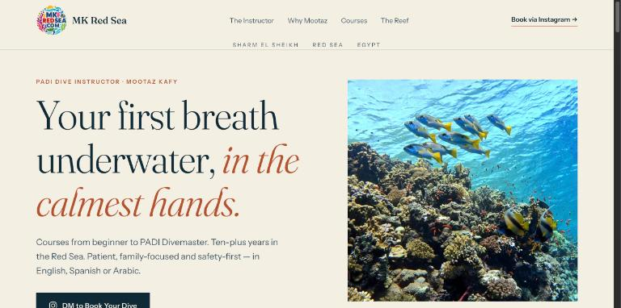
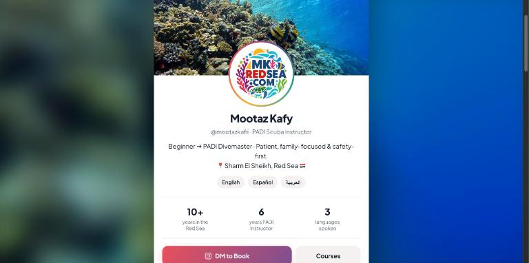
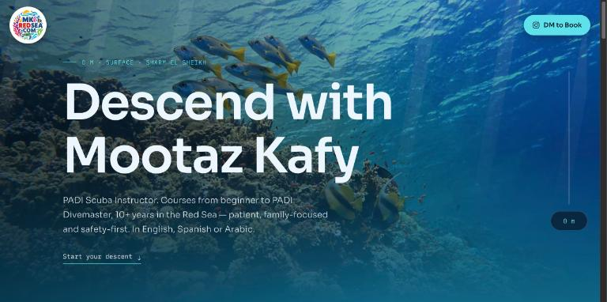
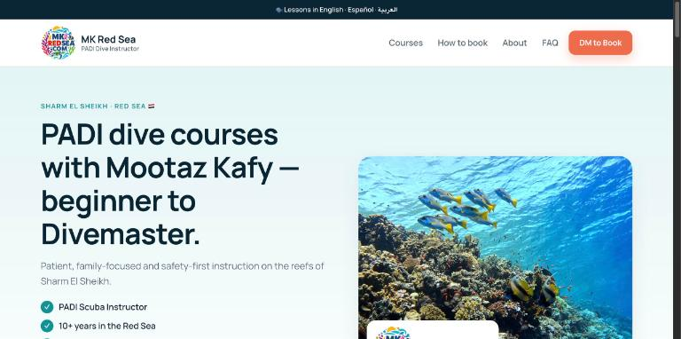
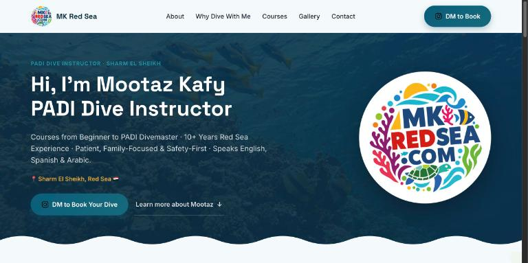
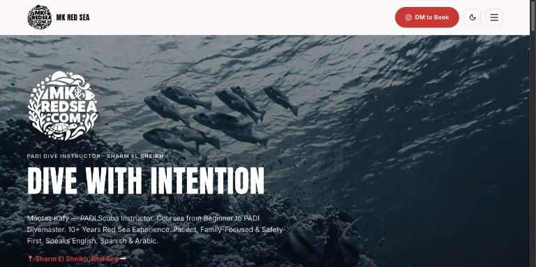
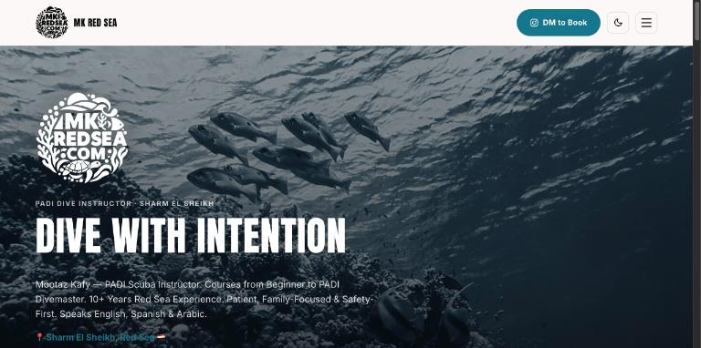
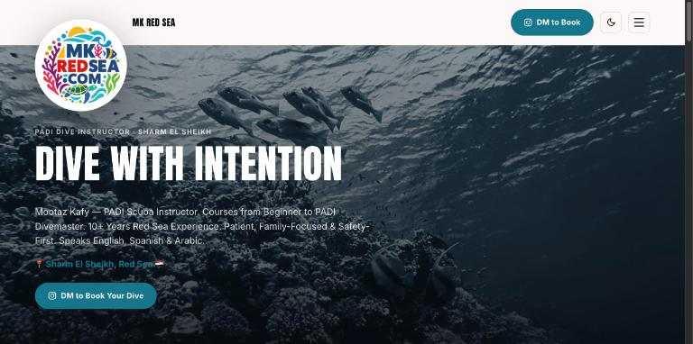

Every version uses the same content, logo and photos, so you can compare purely on look and feel. Click any design to open the full site, and try each one on your phone too.

Laid out like a luxury travel-magazine feature: elegant serif headlines, sand-and-sea colours with a desert-rust accent, chapter numbers, a pull quote from the bio and photos captioned as “plates”. Positions Mootaz as a premium, personal instructor.

Built like an Instagram profile, since that's where bookings happen: logo avatar, stats, languages, highlight circles, a photo feed and tap-to-DM course cards. Phone-first; on desktop it floats over a blurred reef. The DM button docks to the bottom as you scroll.

Scrolling the page is a dive. The water darkens from sunlit blue to the deep, every section sits at a depth (5 m, 12 m, 18 m…), a live depth gauge counts down as you scroll, and bubbles drift past. The most memorable and “experiential” option.

Follows the structure of the big Sharm dive centres, tuned to turn visitors into bookings: trust checklist, stats strip, course cards with “best for”, a 3-step how-to-book, reviews, FAQ, and a sticky DM bar on phones.

Bright and friendly, with the logo's turtle, fish and coral icons used throughout.

Dark, bold and monochrome with moody blue-grey photos, a red accent and a light/dark switch.

The bold design with a friendlier blue accent instead of red.

The blue bold design with the full-colour logo enlarged, floating over the header.